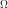
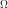
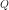

The Metropolis-Hastings Algorithm¶
 -algebra
-algebra  on
, a Markov chain is a process
such that
on
, a Markov chain is a process
such thatAn example is the random walk for which where the steps are independent and identically distributed.
 is
a mapping such that
is
a mapping such thatis measurable;
- is a probability distribution on.
The kernel  has density
has density  if
.
if
.
if
. on with
initial distribution  (that is ):
(that is ):denotes the probability distribution of the Markov Chain ;
denotes the probability distribution of ();
- denotes the mapping defined by for all
 .
.
 if
ifThen the notation used here is .
be a (target)
distribution on , then a transition kernel
is said to be:- -invariant if ;
- -irreducible if, such
that ,
holds.
Markov Chain Monte-Carlo techniques allows to sample and integrate
according to a distribution which is only known up to a
multiplicative constant. This situation is common in Bayesian statistics
where the “target” distribution, the posterior one
, is proportional
to the product of prior and likelihood: see equation (1).
In particular, given a “target” distribution and a
-irreducible kernel transition , the
Metropolis-Hastings algorithm produces a Markov chain
of distribution with the
following properties:
the transition kernel of the Markov chain is
-invariant;;
the Markov chain satisfies the ergodic theorem: let
 be
a real-valued function such that
, then, whatever the
initial distribution is:
be
a real-valued function such that
, then, whatever the
initial distribution is:
In that sense, simulating amounts to
sampling according to and can be used to integrate relatively
to the probability measure . Let us remark that the ergodic
theorem implies that
almost surely.
By abusing the notation, represents, in the remainder of
this section, a function of  which is proportional to the PDF
of the target distribution . Given a transition kernel
of density
which is proportional to the PDF
of the target distribution . Given a transition kernel
of density  , the scheme of the Metropolis-Hastings
algorithm is the following (lower case letters are used hereafter for
both random variables and realizations as usual in the Bayesian
literature):
, the scheme of the Metropolis-Hastings
algorithm is the following (lower case letters are used hereafter for
both random variables and realizations as usual in the Bayesian
literature):
Draw and set
 .
.Draw a candidate for according to the given transition kernel : .
Compute the ratio .
Draw ; if then set , otherwise set .
Set and go back to 1).
Of course, if is replaced by a different function of
which is proportional to it, the algorithm keeps unchanged, since
only takes part in the latter in the ratio
. Moreover, if proposes
some candidates in a uniform manner (constant density ), the
candidate is accepted according to a ratio
 which reduces to the previous “natural” ratio
of PDF. The introduction of
in the ratio prevents from the bias of a
non-uniform proposition of candidates which would favor some areas of
.
which reduces to the previous “natural” ratio
of PDF. The introduction of
in the ratio prevents from the bias of a
non-uniform proposition of candidates which would favor some areas of
.
The -invariance is ensured by the symmetry of the expression of
(-reversibility).
In practice, is specified as a random walk ( such that ) or as a independent sampling ( such that ), or as a mixture of random walk and independent sampling.
-irreducibility. Moreover, for efficient convergence,
has to be chosen so as to explore quickly the whole support
of without conducting to a too small acceptance ratio (the
ratio of accepted candidates ). It is usually
recommended that this latter ratio is about but such a
ratio is neither a warranty of efficiency, nor a substitute to a
convergence diagnosis.API:
Examples:
References:
Robert, C.P. and Casella, G. (2004). Monte Carlo Statistical Methods (Second Edition), Springer.
Meyn, S. and Tweedie R.L. (2009). Markov Chains and Stochastic Stability (Second Edition), Cambridge University Press.